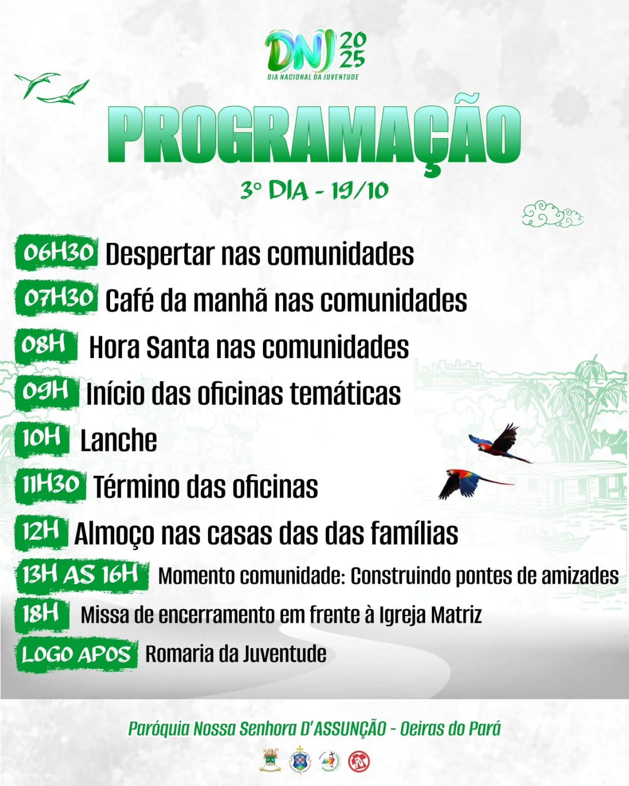
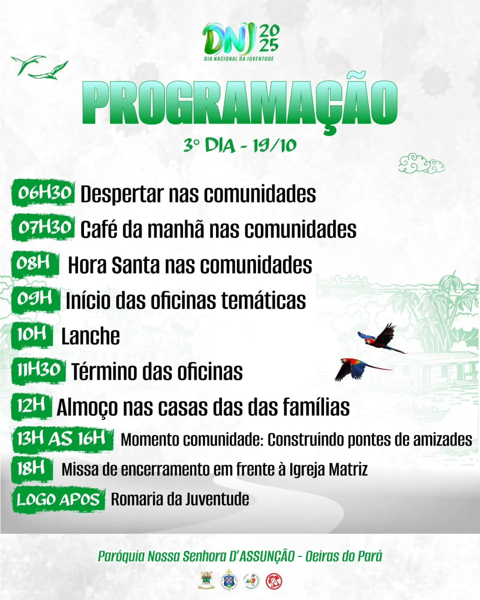

O Dia Nacional da Juventude (DNJ)
é dedicado a reunir jovens de diversas paróquias e comunidades para celebrar a fé, fortalecer
os laços comunitários e refletir sobre temas relevantes para a juventude.
O objetivo principal do DNJ é incentivar os jovens a viverem sua fé de maneira ativa e engajada,
promovendo valores cristãos e a participação na vida da Igreja e da sociedade.
DNJ 2025 em Oeiras do Pará! 🌿
Nos dias 17 a 19 de outubro, a Paróquia Nossa Senhora D’Assunção será palco de um dos momentos mais especiais da juventude católica: o Dia Nacional da Juventude (DNJ), que em 2025 celebra seus 40 anos de história! 🎉
Este ano, o DNJ traz o tema “Juventude e Ecologia Integral” e o lema “Jovens guardiões da criação”. 💚
É o convite de Cristo para que nós, jovens, sejamos protagonistas na defesa da vida, do meio ambiente e da Casa Comum, testemunhando com alegria o Evangelho em meio ao mundo. 🌍✨
Será um tempo de oração, louvor, reflexão, convivência e muita animação!
E em espírito de comunhão, participação e missão, que nossas comunidades com espírito juvenil, em grupos, movimentos e pastorais, que se unem nesta grande festa para acolher as 12 paróquias da Região Tocantina que celebram conosco o Dia Nacional da Juventude. 🤍
 

Onde é localizada a Igreja Matriz de Oeiras do Pará. Nss Sra da Assunção, padroeira da cidade.
C.C Nss Sra de Nazaré
Grupo de Base
JOPP (Juventude Organizada Proporcionando Paz) fundado em 25/03/2002.
C.C Santa Terezinha
Grupo de Base
JOEC
C.C Santo Antônio
Grupo de Base
JUSAN
C.C São Roque
Grupo de Base
FAJE (Filhos do Autíssimo Jovens da Esperança)
C.C São Benedito
Grupo de Base
JRF
C.C Espírito Santo
Grupo de Base
JMP (Jovens Mensageiros da Paz)
C.C Santa Maria
Grupo de Base
JOEC
A fixação dos primeiros moradores da área que mais tarde, viria a dar surgimento ao Município de Oeiras do Pará iniciou seu povoamento, por volta do ano de 1653, ali os Jesuítas instalaram uma missão, que denominaram de Araticu, que no idioma Nheengatu, significa “Língua de Papagaio” e em virtude de se localizar as margens do rio do mesmo nome. Pelo número de índios aldeados e pelo volume de extração extrativista, tornou-se uma das maiores missões Jesuítas no interior da província.
Os Padres Jesuítas com o trabalho junto aos indígenas transformaram a aldeia em Freguesia de Nossa Senhora da Assunção de Oeiras.
No final do XVIII, o ex-governador e Capitão-General Francisco Xavier de Mendonça Furtado, em 20 de Janeiro de 1758, pessoalmente elevou Araticu a Vila de Oeiras.
Portanto, 20 de Janeiro de 1758 é considerada a data de fundação do Município de Oeiras do Pará.
Oeiras do Pará é um município ribeirinho com uma área de 3.862,96 km² entrecortada por uma densa rede fluvial e vias rodoviárias.
A sede do município é distante 160 km em linha reta da Capital do Estado. O acesso ao município se dá através de vias aéreas (aviões de pequeno porte) ou fluvial com viagens semanais com duração de até 12 horas entre Oeiras/Belém.
O município localiza-se na mesorregião Nordeste Paraense, limitando-se ao Norte com o Rio Pará, nas coordenadas geográficas 02º 00′ 15” S e 49º 51′ 35”; ao Leste com os municípios de Limoeiro do Ajuru, Mocajuba, Cametá e Baião; ao Sul com os municípios Baião e Bagre; a Oeste com o município de Bagre. Possui uma população de aproximadamente 31 Mil (trinta e um mil) Habitantes.
No período de 06 à 15 de agosto de cada ano, realiza-se a festividade da padroeira de Oeiras do Pará, Nossa Senhora da Assunção, que é uma das maiores manifestações do lugar. Seus festejos são acompanhados de Círio e Arraial em torno da igreja e comunidades.

Destacam-se, também, outras festas populares, tais como o Aniversário do Município,
carnaval, Paixão de Cristo (Pastoral da Juventude), festa junina, Festival do Camarão, torneio de férias, Festival de Teatro, Festival Evangélico (Assembleia de Deus), Natal e Reveillon.

Alterações toponímicas municipais
Oeiras para Araticu, alterado pelo decreto-lei estadual nº 4505, de 30-12-1943.
Araticu para Oeiras do Pará, alterado pela lei estadual nº 3400, de 01-10-1965.
Fonte: oeirasdopara.pa.gov.br/novo/historico/